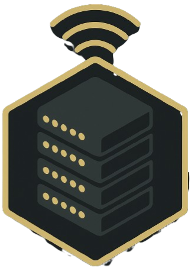

SERVER STACK SYSTEM // DIRECT SERVICES // NO CONTAINERS
ZZX-SSS
Modular Server Stack System that automates setup, deployment, and synchronization of ZZX-Labs backend environments using direct local Nginx, Flask, Gunicorn, database, VPN, reverse-proxy, SSL, and private API orchestration for mirrored .io and .onion services.
Container-free by policy: Docker and container orchestration are disabled. Generated service/firewall plans are review-only.
Services0
DockerOFF
Remote shellOFF
Auto applyOFF
native/ stack_validate.py